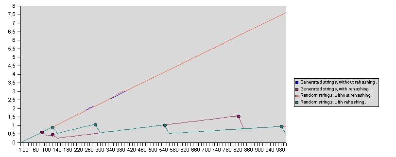

HashTable Class
Associative container using hashing method.
template <class IndexType, class ItemType>
class HashTable : public AssociativeContainer< IndexType, ItemType >
Template parameters
- IndexType
-
Type of indices (keys) the items in the hashtable are accessible with.
- ItemType
-
Type of items the hashtable stores.
Members
Constructors
Content management
| Swap |
Swaps content of two hashtables.
|
Content query
| Enumerate |
Allows enumeration of the hashtable's items.
|
| Begin |
Returns an iterator referring to the first item in the hashtable.
|
| End |
Returns an iterator referring to the one past last item in the hashtable.
|
| EnumeratePairs |
Allows enumeration of the hashtable's content.
|
| BeginPairs |
Returns an iterator referring to the first index-item pair in the hashtable.
|
| EndPairs |
Returns an iterator referring to the one past last index-item pair in the hashtable.
|
Performance tuning
Public Types
Description
HashTable is an AssociativeContainer implementation that can access items very fast
using hashing method. Index (key) type should provide an external hash value generator
function in either of the following forms:
ULong GenerateHashValue (const IndexType& from);
ULong GenerateHashValue (IndexType from);
This function should generate an integer from its parameter. It should be deterministic,
fast and should have good variance (different parameters should yield different hash values
as much is possible). There are predefined generator functions for built-in integer types
(char, short, int, long and their unsigned counterparts), C strings (const char*), pointers
and GS::UniString. There is also a helper function
ULong GenerateBinaryHashValue (const IndexType& from);
that can be used for the generation of hash values based on the binary layout of the given type.
Moreover index (key) type should have comparison (==, !=) operators (either internal or external).
Costs of item access, insertion and deletion are very close to constant. Index-item
pairs are stored in hash lists. Every index determines a hash list by taking modulo
of its generated hash value with current number of hash lists. Different indices may fall into
the same hash list. Inside a hash list linear searching is performed to find the desired
index by comparing indices by value using comparison operators.
Average seek factor is defined as the average number of comparisons needed to find
an existing index in some configuration of the hashtable. At least one comparison in the
determined hash list is always performed so the minimum average seek factor is 1.
Average seek factor depends on the distribution of indices in hash lists. Uniform
distribution will decrease the average seek factor. As new index-item pairs are put into
the hashtable the average seek factor will increase in long term and this will decrease the
performance. User can specify limit for the average fill factor above which the hashtable will
increase (approximately double) the number of hash lists, which will very likely reduce the
average seek factor. This is called rehashing.
Fill factor is defined as ratio of the hashtable's size (number of stored index-item pairs)
and current number of hash lists. It shows how much is the hashtable filled. It may happen in bad
circumstances that a rehashing does not reduce the average seek factor (see the
case study below). Then it would immediatelly trigger an another rehashing which would in bad
circumstances trigger an another one and so on until the whole memory is consumed. However after
rehashing the fill factor is certainly reduced (approximately to the half of the old one).
User can specify the minimum fill factor required the rehashing to be considered at all.
The minimum fill factor prevents the coninuous rehashing and controls the memory usage efficiency
that is especially useful when small average seek factor limits are specified. Rehashing will
happen only when both average fill factor limit and minimum fill factor are exceeded.
Order of indices inside hash lists can be also controlled. If seek order optimization is
enabled then the index that was accessed the last time will be put to the front of its list.
As a result, frequently used inidices will be close to the front of the list. This can be
useful when a subset of indices is accessed much more frequently than others. This optimization
has little overhead but the LRU (Last Recently Used) strategy may decrease the performance
when cyclically most of items are accessed and with similar frequency. Note that rehashing will
temporary disturb the ordering. By default this optimization is disabled.
Addresses of index-item pairs are not stable, they can change due to rehashing and deleting
so references to items can be stored only until the next modifying operation on the hashtable
is invoked.
Hashtable imposes medium overhead on index-item pairs: total cost of an index-item pair
storage cell involves the index and the item themselves, a pointer to the next cell and the overhead
due to the hash list table that contains pointers to hash lists.
Items are required to have default and copy constructors and assigment operator.
In addition if they have comparison operators (== and !=) then value dependent
operations (eg. ContainsValue) will be also useable.
Indices are required to have default and copy constructors, assigment operator,
comparison (==, !=) operators and external GenerateHashValue function.
The following figure shows the internal layout of the HashTable. It is implemented with
an Array and a PagedArray using Linear allocation strategy.
The following diagram shows a case study: conformation of the average seek factor in function
of the hashtable size (number of stored index-item pairs) with string indices.
It was tried both with random strings and generated strings ("000000", "000001", ...) and both
with and without rehashing. This yielded four cases. When rehashing was used the average
seek factor limit was 1.5 and the minimum fill factor was 0.5. Bullets indicate the
rehashing points.
It is interesting, that with generated strings the first rehashing has increased the average
seek factor (bad case). However the fill factor was dropped below 0.5 so the next rehashing
could take place only somewhat later. In the meantime the average seek factor was decreased
because due to the bad distribution mainly empty hash lists were used for new indices,
introducing many seek factors of value 1. After the second rehashing the average seek
factor was increased slowly and smoothly. The third rehashing has happened after the
third rehashing of the random string case!
It is also interesting that average seek factors of generated string cases are mainly better
then average seek factors of random string cases. This is because of the complex conjuction
of generated strings, hash value generator function and prime sizes of the hash list table.
The following diagram shows the conformation of the maximum seek factor in function
of the hashtable size:
The following diagram shows the conformation of the fill factor in function
of the hashtable size:

Requirements
Namespace: GS
Header: HashTable.hpp